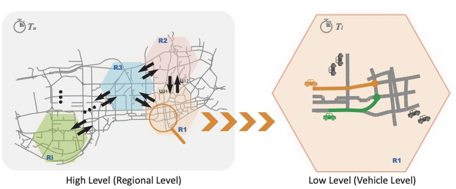

|
Pengbo Zhu I am currently a PhD candidate in the Urban Transport Systems Laboratory (LUTS), at École Polytechnique Fédérale de Lausanne (EPFL), Switzerland. I am co-supervised by Prof. Nikolas Geroliminis and Prof. Giancarlo Ferrari-Trecate. My research is a part of "Mobility of the future" in The National Centre of Competence in Research "Dependable, ubiquitous automation" (NCCR automation), funded by Swiss National Science Foundation (SNSF). |

|
ResearchMy research interests lie in fleet management, mobility on-demand Systems, traffic control, and multi-agent systems. |
|
 |
Data-enabled Predictive Control for Empty Vehicle Rebalancing
Pengbo Zhu, Giancarlo Ferrari-Trecate, Nikolas Gerolimini ECC, 2023 This paper is about empty vehicle rebalancing using data-enabled predictive control. |
Miscellanea |
|
template from here |